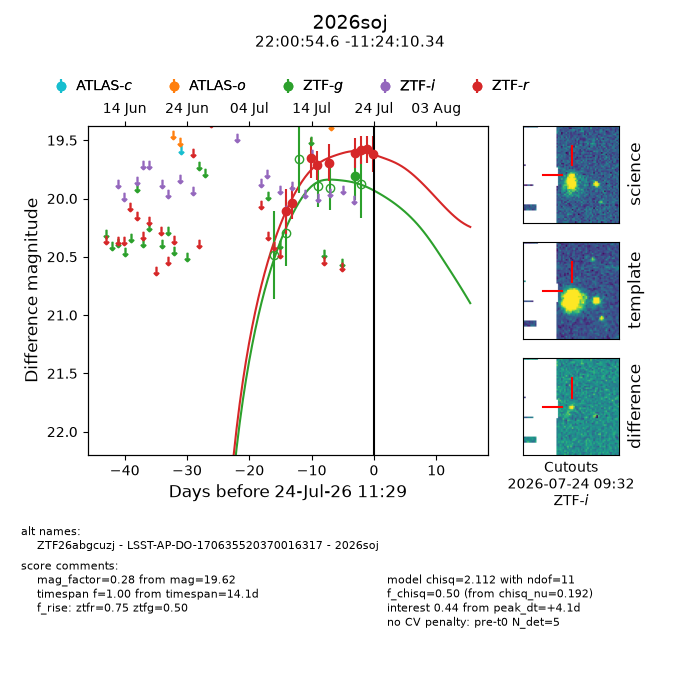
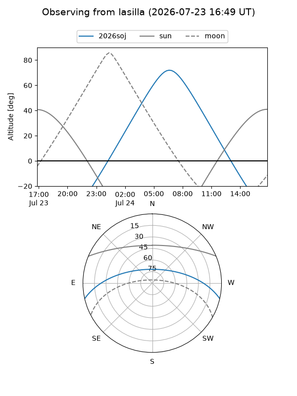
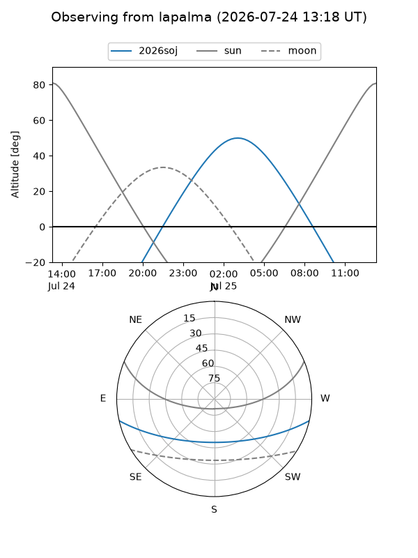
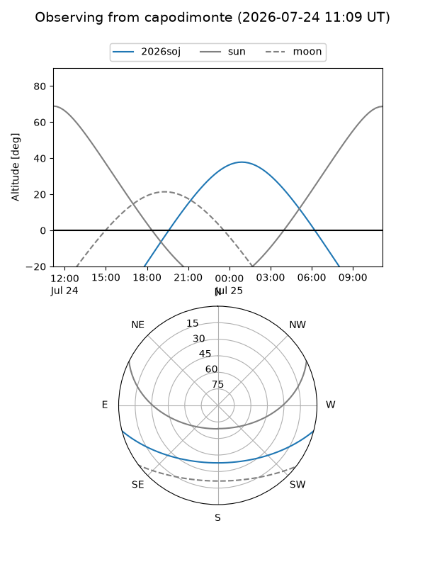
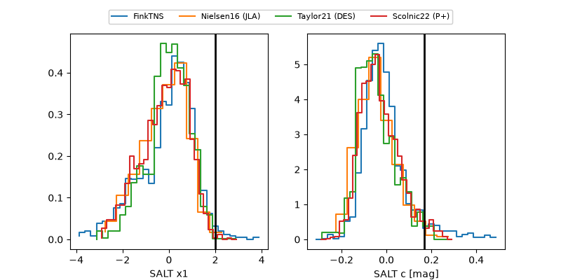

2026soj
Target 2026soj at 2026-07-24 11:31
Aliases and brokers:
FINK-ZTF: ztf.fink-portal.org/ZTF26abgcuzj
Lasair-ZTF: lasair-ztf.lsst.ac.uk/objects/ZTF26abgcuzj
ALeRCE-ZTF: alerce.online/object/ZTF26abgcuzj
YSE-PZ: ziggy.ucolick.org/yse/transient_detail/2026soj
TNS name: wis-tns.org/object/2026soj
Direct TNS query: direct search
alt names
ZTF26abgcuzj (ztf,fink_ztf)
2026soj (tns,yse)
LSST-AP-DO-170635520370016317 (iau_lsst)
Coordinates:
equatorial (ra, dec) = 330.2274,-11.40287
equatorial (HMS+DMS) = 22:00:54.57,-11:24:10.34
galactic (l, b) = (45.9007,-47.05486)
Flags:
TNS type: nan
peak dt: +4.1
Photometry:
last ztfg=19.81, ztfr=19.62
1 ztfg, 9 ztfr detections
Lightcurve

Visibility



Additional plots
